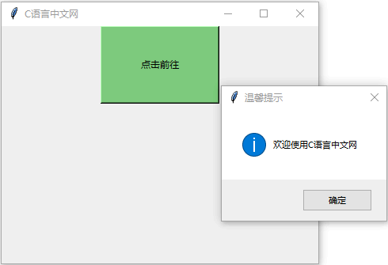
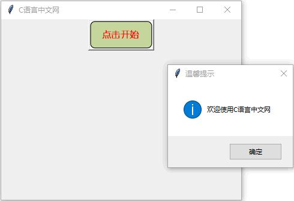
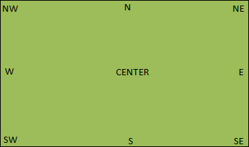
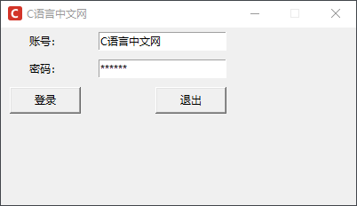

Tkinter Button按钮控件
Button 控件是 Tkinter 中常用的窗口部件之一，同时也是实现程序与用户交互的主要控件。通过用户点击按钮的行为来执行回调函数，是 Button 控件的主要功用。首先自定义一个函数或者方法，然后将函数与按钮关联起来，最后，当用户按下这个按钮时，Tkinter 就会自动调用相关函数。
按钮控件使用起来非常简单，它同样可以包含文本、图像、位图，并通过
除了 Button 按钮之外，和其类似的按钮还有复选框按钮（Checkbutton）和单选框按钮（Radiobutton），它们分别有着不同语法和使用场景，后续会做详细介绍。
下面通过一组示例对 Button 控件的用法做简单的说明：
通过上述示例不难看出，Button 控件的作用就是“执行一个函数”，当用户点击按钮时会弹出一个新的对话框，这种操作巧妙地提升了用户的人机交互体验。因此，按钮控件在 GUI 编程中被广泛的使用。
下面为 Button 控件添加一张背景图片，实现代码如下所示：
grid() 布局管理器提供了一个
按钮控件使用起来非常简单，它同样可以包含文本、图像、位图，并通过
command参数回调函数。当然按钮也并非一定要执行回调函数（callback function），它也只可以当一个“摆设”，不过这样的按钮是没有“灵魂的”，Button 控件的使用流程如下所示：
import tkinter as tk
# 创建窗口
window =tk.Tk()
# 设置回调函数
def callback():
print ("click me!")
# 使用按钮控件调用函数
b = tk.Button(window, text="点击执行回调函数", command=callback).pack()
# 显示窗口
tk.mainloop()
Button 控件的常营属性如下所示：| 属性 | 说明 |
|---|---|
| anchor | 控制文本所在的位置，默认为中心位置（CENTER） |
| activebackground | 当鼠标放在按钮上时候，按妞的背景颜色 |
| activeforeground | 当鼠标放在按钮上时候，按钮的前景色 |
| bd | 按钮边框的大小，默认为 2 个像素 |
| bg | 按钮的背景色 |
| command | 用来执行按钮关联的回调函数。当按钮被点击时，执行该函数 |
| fg | 按钮的前景色 |
| font | 按钮文本的字体样样式 |
| height | 按钮的高度 |
| highlightcolor | 按钮控件高亮处要显示的颜色 |
| image | 按钮上要显示的图片 |
| justify | 按钮显示多行文本时，用来指定文本的对齐方式，参数值有 LEFT/RIGHT/CENTER |
| padx/pady | padx 指定 x 轴（水平方向）的间距大小，pady 则表示 y轴（垂直方向）的间距大小 |
| ipadx/ipady | ipadx 指标签文字与标签容器之间的横向距离；ipady 则表示标签文字与标签容器之间的纵向距离 |
| state | 设置按钮的可用状态，可选参数有NORMAL/ACTIVE/DISABLED，默认为 NORMAL |
| text | 按钮控件要显示的文本 |
除了 Button 按钮之外，和其类似的按钮还有复选框按钮（Checkbutton）和单选框按钮（Radiobutton），它们分别有着不同语法和使用场景，后续会做详细介绍。
下面通过一组示例对 Button 控件的用法做简单的说明：
import tkinter as tk
from tkinter import messagebox
window = tk.Tk()
# 设置窗口的标题
window.title('C语言中文网')
# 设置并调整窗口的大小、位置
window.geometry('400x300+300+200')
# 当按钮被点击的时候执行click_button()函数
def click_button():
# 使用消息对话框控件，showinfo()表示温馨提示
messagebox.showinfo(title='温馨提示', message='欢迎使用C语言中文网')
# 点击按钮时执行的函数
button = tk.Button(window,text='点击前往',bg='#7CCD7C',width=20, height=5,command=click_button).pack()
# 显示窗口
window.mainloop()
程序运行结果如下：

图1：tkinter Button控件
图1：tkinter Button控件
通过上述示例不难看出，Button 控件的作用就是“执行一个函数”，当用户点击按钮时会弹出一个新的对话框，这种操作巧妙地提升了用户的人机交互体验。因此，按钮控件在 GUI 编程中被广泛的使用。
下面为 Button 控件添加一张背景图片，实现代码如下所示：
import tkinter as tk
from tkinter import messagebox
window = tk.Tk()
# 设置窗口的标题
window.title('C语言中文网')
# 设置窗口的大小
window.geometry('400x300+300+200')
# 当按钮被点击的时候执行click_button()函数
def click_button():
# 使用消息对话框控件，showinfo()表示温馨提示
messagebox.showinfo(title='温馨提示', message='欢迎使用C语言中文网')
# 创建图片对象
im = tk.PhotoImage(file='C:/Users/Administrator/Desktop/按钮.gif')
# 通过image参数传递图片对象
button = tk.Button(window,image=im,command=click_button).pack()
# 启动窗口
window.mainloop()
程序运行结果如下：

图2：tkinter Button按钮
图2：tkinter Button按钮
扩展：按钮的布局
按钮在主窗口中的布局，通常使用 grid() 函数来完成，该函数以网格状的形式（即行和列）来管理窗口的布局。grid() 布局管理器提供了一个
sticky参数，通过该参数可以设置按钮的方位，该参数默认将控件设置居中，其他参数值有 N/S/W/E（上/下/左/右），而且可以组合在一起使用，比如 NW/WE/SE/SW/NE 等，这与anchor参数控制文本的显示位置，有着异曲同工之妙。如下图所示：

图3：按钮方位
图3：按钮方位
值得大家注意的是 grid() 布局方法不能与 pack() 混合在一起使用，相关知识在后续内容中还会做针对性讲解。
下面看一组简单的示例：
import tkinter as tk
from tkinter import messagebox
win = tk.Tk()
win.title("C语言中文网")
win.iconbitmap('C:/Users/Administrator/Desktop/C语言中文网logo.ico')
win.geometry('400x200+100+100')
win.resizable(0,0)
# 将俩个标签分别布置在第一行、第二行
tk.Label(win, text="账号：").grid(row=0)
tk.Label(win, text="密码：").grid(row=1)
# 创建输入框控件
e1 = tk.Entry(win)
# 以 * 的形式显示密码
e2 = tk.Entry(win,show='*')
e1.grid(row=0, column=1, padx=10, pady=5)
e2.grid(row=1, column=1, padx=10, pady=5)
# 编写一个简单的回调函数
def login():
messagebox.showinfo('欢迎您到来')
# 使用 grid()的函数来布局，并控制按钮的显示位置
tk.Button(win, text="登录", width=10, command=login).grid(row=3, column=0, sticky="w", padx=10, pady=5)
tk.Button(win, text="退出", width=10, command=win.quit).grid(row=3, column=1, sticky="e", padx=10, pady=5)
win.mainloop()
程序运行结果：

图4：控制按钮位置
图4：控制按钮位置
关注公众号「站长严长生」，在手机上阅读所有教程，随时随地都能学习。内含一款搜索神器，免费下载全网书籍和视频。

微信扫码关注公众号